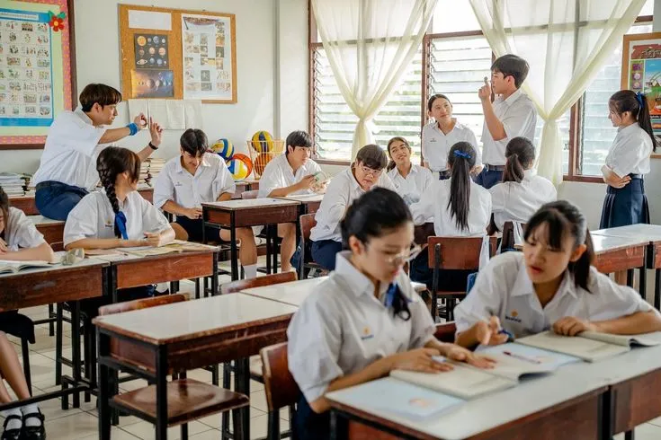

Tentang Kami
Mengenal lebih dekat visi, misi, dan nilai-nilai yang kami bangun.

Membangun Generasi Emas
Didirikan sejak tahun 2010, SekolahKu telah berkomitmen untuk memberikan pendidikan berkualitas tinggi. Kami percaya bahwa setiap anak memiliki potensi unik yang harus dikembangkan melalui pendekatan pembelajaran yang holistik dan modern.
- Kurikulum Nasional Plus
- Tenaga Pengajar Tersertifikasi
- Lingkungan Belajar Inklusif
Visi
Menjadi institusi pendidikan terkemuka yang mencetak pemimpin masa depan yang berakhlak mulia, cerdas, dan inovatif di era global.
Misi
Menyelenggarakan pendidikan berkualitas, memfasilitasi pengembangan minat dan bakat, serta menanamkan nilai-nilai karakter bangsa.
Perjalanan dan Komitmen Kami
Sejak awal berdiri, SekolahKu dibangun dengan keyakinan bahwa pendidikan yang baik harus membentuk pengetahuan, sikap, dan keterampilan secara seimbang. Kami terus berinvestasi pada kualitas guru, suasana belajar, serta kegiatan siswa agar setiap anak merasa aman untuk tumbuh dan berkembang.
Dengan dukungan orang tua dan tim pengajar yang berdedikasi, kami berusaha menciptakan lingkungan belajar yang hangat namun tetap disiplin, modern namun tetap menanamkan nilai, dan progresif tanpa meninggalkan karakter.

Nilai yang Kami Hidupkan
Prinsip-prinsip ini menjadi dasar dalam setiap proses belajar dan interaksi di sekolah.
Karakter
Kami menanamkan kejujuran, tanggung jawab, empati, dan disiplin sebagai bagian dari keseharian siswa di dalam maupun di luar kelas.
Prestasi
Setiap siswa didorong untuk mencapai potensi terbaiknya melalui pembelajaran aktif, pendampingan guru, dan evaluasi yang terarah.
Kolaborasi
Kami percaya pertumbuhan siswa akan lebih kuat jika sekolah, guru, dan orang tua berjalan bersama dalam satu visi pendidikan.